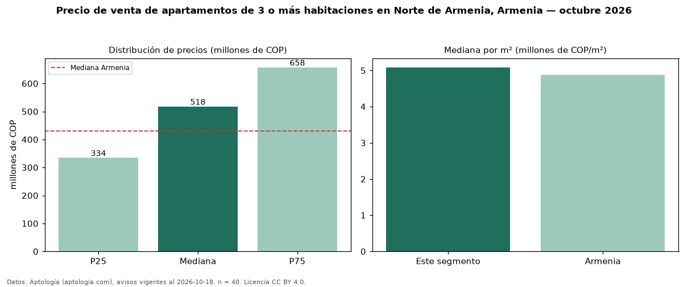

Precio de venta de apartamentos de 3 o más habitaciones en Norte de Armenia, Armenia — octubre 2026
En Norte de Armenia, Armenia, la mediana de precio de venta de apartamentos de 3 o más habitaciones es COP 518 millones, según 40 avisos vigentes. Eso es 20 % por encima de la mediana de Armenia para apartamentos de 3 o más habitaciones (COP 430 millones). Por metro cuadrado, la mediana es COP 5,08 millones/m² (n = 39 avisos con área), 4 % por encima de Armenia (COP 4,88 millones/m²). Son 54 % de los 74 avisos de apartamentos en venta de la zona, cuya mediana general es COP 400 millones (+29 %). El área mediana anunciada es 90 m². La administración mediana declarada es COP 380.000 al mes (n = 33). La mitad central de los avisos va de COP 334 millones a COP 658 millones (razón 2,0), una dispersión moderada. El estrato más frecuente es 5 (72 % de los avisos con estrato). Datos: Aptología (aptologia.com), CC BY 4.0 — https://www.aptologia.com/venta/armenia/norte-de-armenia. Archivos: PDF, CSV con las cifras y gráfica PNG.

| Avisos únicos | 40 |
|---|---|
| Percentil 25 | COP 334.250.000 |
| Mediana | COP 517.500.000 |
| Percentil 75 | COP 657.500.000 |
| Mediana por m² | COP 5.084.745 |
Fuente: avisos vigentes de portales inmobiliarios recopilados por Aptología, deduplicados (mínimo 30 avisos únicos por celda). Precios pedidos, no cerrados. Fecha: 2026-10-18.